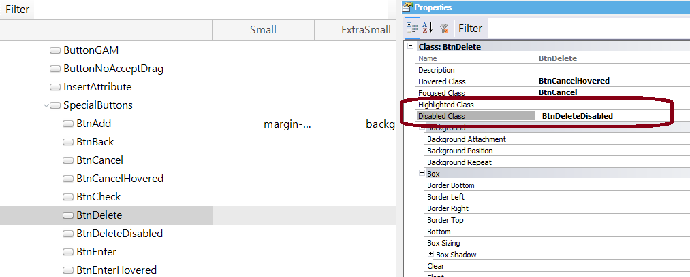

Generators: Java, .NET, .NET Core
Level: Web Theme Class
This property applies only at design-time.
The Delete button of the default Transaction form is associated with the (predefined) BtnDelete class.
The Disabled Class property of the BtnDelete class is set with the value "BtnDeleteDisabled" (which contains the settings for the disabled buttons that have been associated with the BtnDelete class).

So, when a Transaction is called in INS mode, its Delete button is disabled and its appearance depends on the Disabled Class property settings (it belongs to the BtnDelete class).